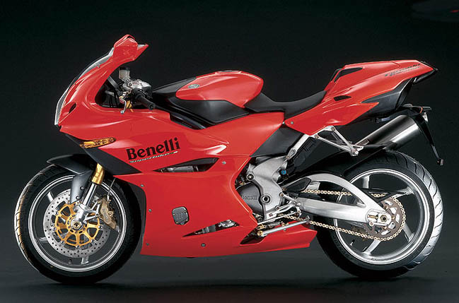
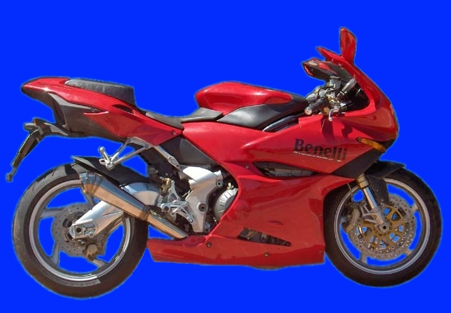
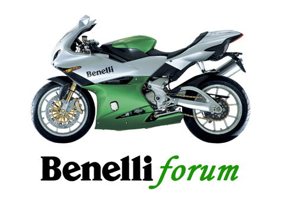
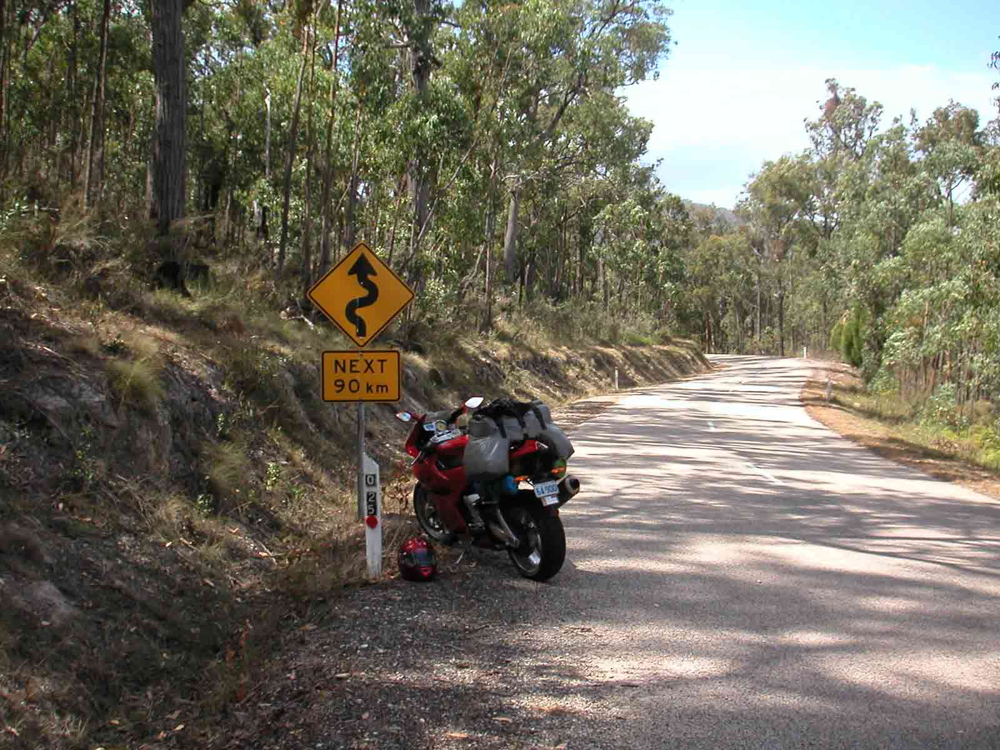
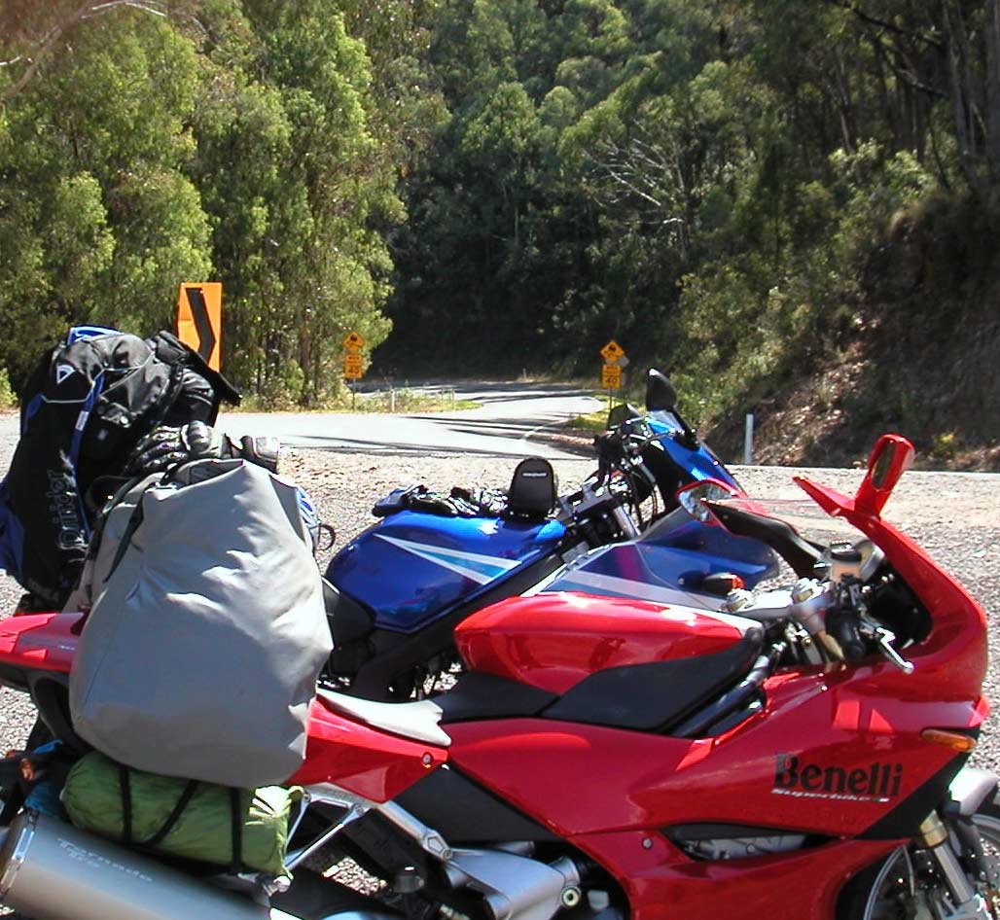
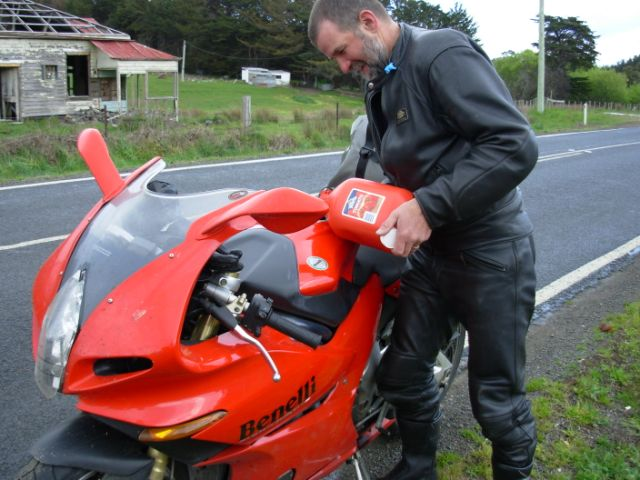

General
Specifications
Maintenance
Body
Engine
Cooling
Frame
Fuel-Ignition
Electrical
Diagnostics
Aftermarket
TR650
TreK
Engenia's Tornado 900 Tre



The best motorcycle forum on the planet



Bonang Highway, heading north, 25km north of Orbost, Vic, Mch 2006.
5 km north of Orbost there is another one exactly the same!
Tawonga Gap, near Mt Beauty, Vic. - Mch 2006
First Fuel stop in Tasmania, Oct 2007
Updated 03 Oct 2024 (Electrical Safety System Tornado)